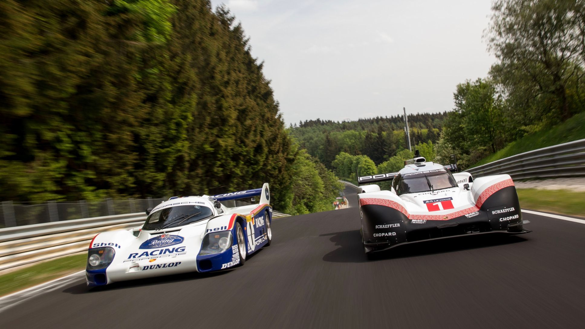
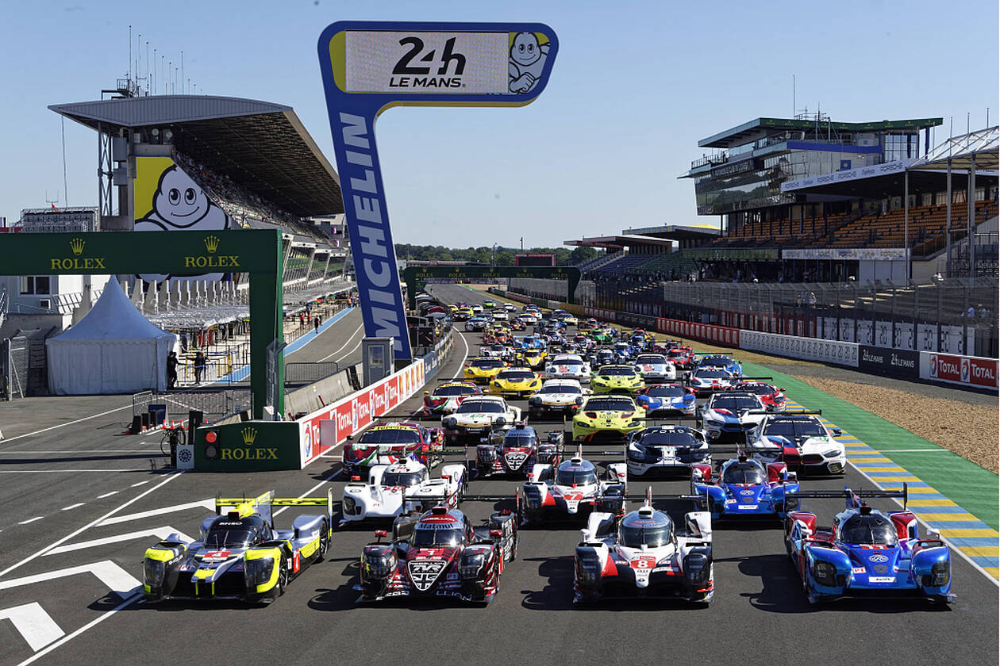
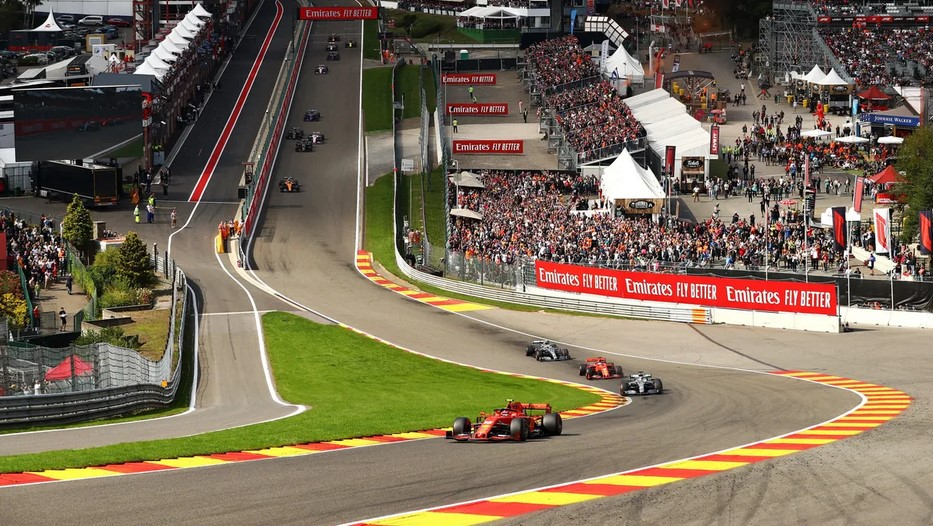
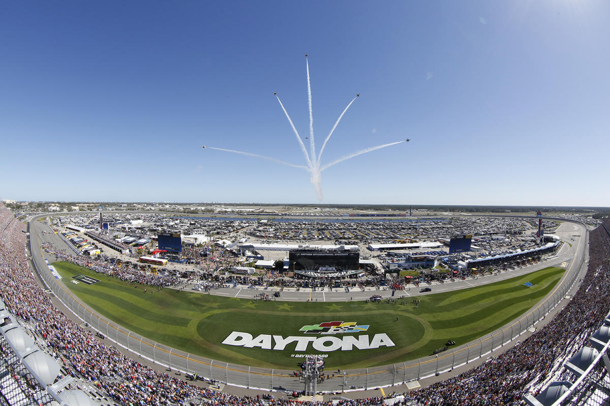
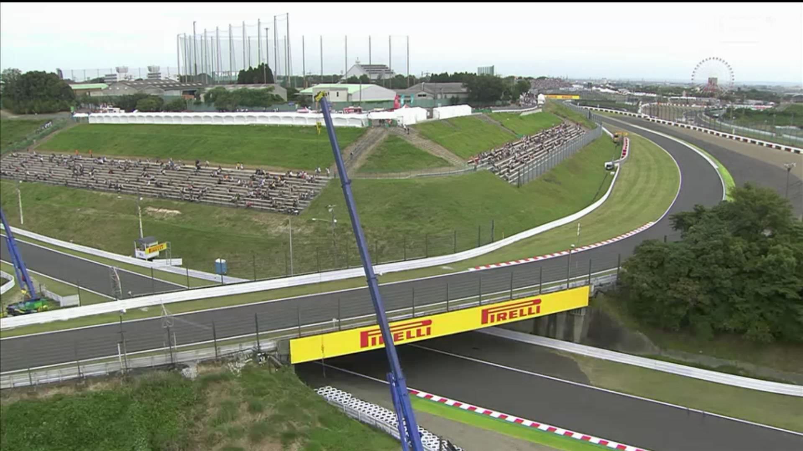
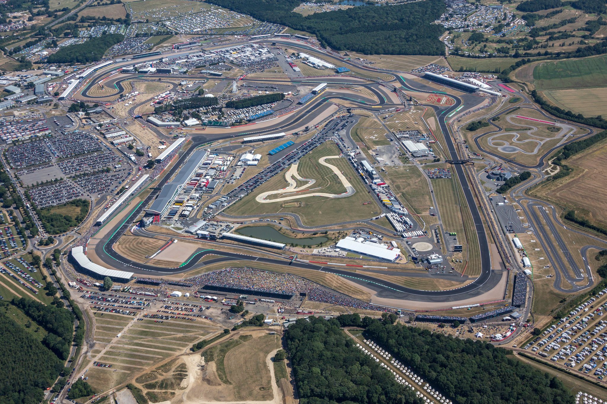

Here are the best racing tracks in the world 2022. All the data collected from open sourse resourses.

The Nürburgring is a 150,000 person capacity motorsports complex located in the town of Nürburg, Rhineland-Palatinate, Germany. It features a Grand Prix race track built in 1984, and a much longer Nordschleife "North loop" track which was built in the 1920s around the village and medieval castle of Nürburg in the Eifel mountains. The north loop is 20.830 km (12.943 mi) long and has more than 300 metres (1,000 feet) of elevation change from its lowest to highest points. Jackie Stewart nicknamed the old track "The Green Hell".

The Circuit des 24 Heures du Mans, also known as Circuit de la Sarthe (after the 1906 French Grand Prix triangle circuit) located in Le Mans, Sarthe, France, is a semi-permanent motorsport race course, chiefly known as the venue for the 24 Hours of Le Mans auto race.
Comprising private, race-specific sections of track in addition to public roads which remain accessible most of the year, its present configuration is 13.626 km (8.467 mi) long.

Spa-Francorchamps frequently referred to as Spa, is a 7.004 km (4.352 mi) motor-racing circuit located in Stavelot, Belgium.
It is the current venue of the Formula One Belgian Grand Prix, hosting its first Grand Prix in 1925, and has held a Grand Prix every year since 1985 (except 2003 and 2006).
Spa also hosts several other international events including the 24 Hours of Spa, the World Endurance Championship 6 Hours of Spa-Francorchamps. It is also home to the Uniroyal Fun Cup 25 Hours of Spa, one of the longest motor races in the world.

The Daytona International Speedway is currently home to the Daytona 500, NASCAR’s most famous event.
The track has multiple layouts, but the most popular is the iconic 2.5-mile high-speed tri-oval with 31-degree banking at the wide sweeping turns.
The track was built in 1959 by NASCAR founder William "Bill" France Sr. to host racing that was held at the former Daytona Beach Road Course. His banked design permitted higher speeds and gave fans a better view of the cars. Lights were installed around the track in 1998, and today it is the third-largest single-lit outdoor sports facility. The speedway has been renovated four times, with the infield renovated in 2004 and the track repaved in 1978 and 2010. The track is 50 mi (80 km) north of Orlando.

The Suzuka Circuit is Japan’s first full-scale international racing course used for prominent events like Formula One races and the Japanese motorcycle Grand Prix.
It is currently operated by Mobilityland Corporation, a Honda subsidiary.

There is no racing course in the United Kingdom as popular as the Silverstone circuit, the ‘Home of British Motorsport.’ In 1950, the first-ever World Championship Grand Prix was held at Silverstone, and it’s the current venue for the Formula One British Grand Prix.
The racing circuit was developed on the grounds of an old Royal Airforce base, and the airfield’s three runways, in classic World War II format, still lie within the outline of the present track.
On 30 September 2004, British Racing Drivers' Club president Jackie Stewart announced that the British Grand Prix would not be included on the 2005 provisional race calendar and, if it were, would probably not occur at Silverstone.[6] However, on 9 December an agreement was reached with former Formula One rights holder Bernie Ecclestone ensuring that the track would host the British Grand Prix until 2009 after which Donington Park would become the new host. However, the Donington Park leaseholders, Donington Ventures Leisure, ran into severe financial problems and went into administration, resulting in the BRDC signing a 17-year deal with Ecclestone to hold the British Grand Prix at Silverstone.
The track is mostly known for its breakneck average speeds and flat-out corners where even the slightest miscalculation can have dire consequences—as the current F1 Champion Max Verstappen found out after his tangle with Lewis Hamilton at the 180 mph Copse corner.